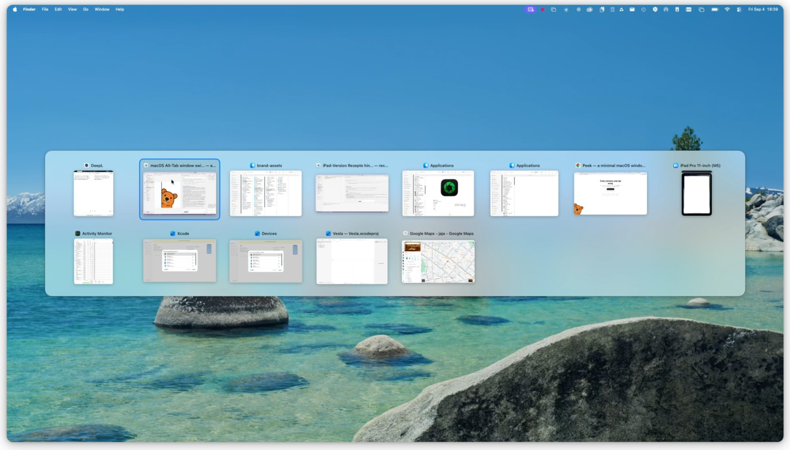
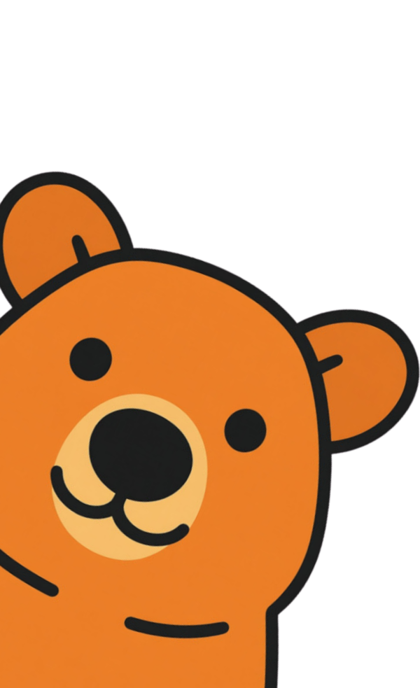

Every window, one tap away.
macOS switches between apps. Peek switches between windows — all of them, across every desktop. Press ⌘ Tab and pick.
Download for macOS

macOS switches between apps. Peek switches between windows — all of them, across every desktop. Press ⌘ Tab and pick.
Download for macOS